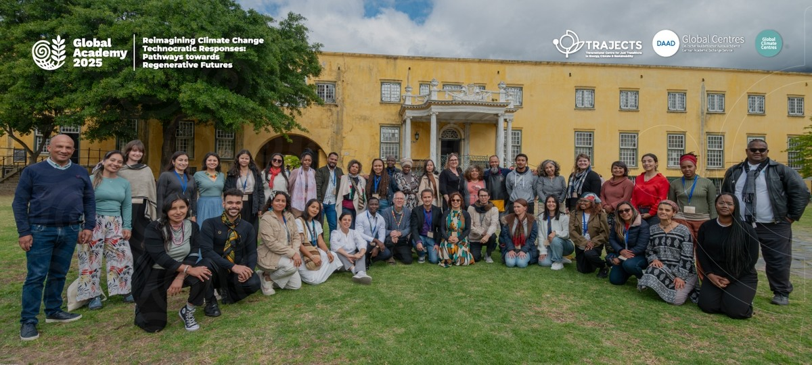

Projeto
TRAJECTS / Technische Universität Berlin / DAAD Global Centres
Global Academy 2025 (Cape Town, South Africa)
Programa internacional da rede TRAJECTS sobre crise climática, transição justa e futuros regenerativos, realizado na Cidade do Cabo.
Parceiros: TRAJECTS, Technische Universität Berlin, DAAD Global Centres

Detalhes
- Atuação
- Participação na Global Academy 2025 e apoio à comunicação digital da rede, com organização de conteúdos, registros e materiais institucionais ligados à transição justa.
- Comprovações
- Páginas oficiais da TRAJECTS sobre a Global Academy 2025, incluindo registros da programação, cobertura em Cape Town e publicações associadas aos DAAD Global Centres.
- Contexto
- A Global Academy 2025 foi organizada pela Technische Universität Berlin no âmbito da rede TRAJECTS e dos DAAD Global Centres.